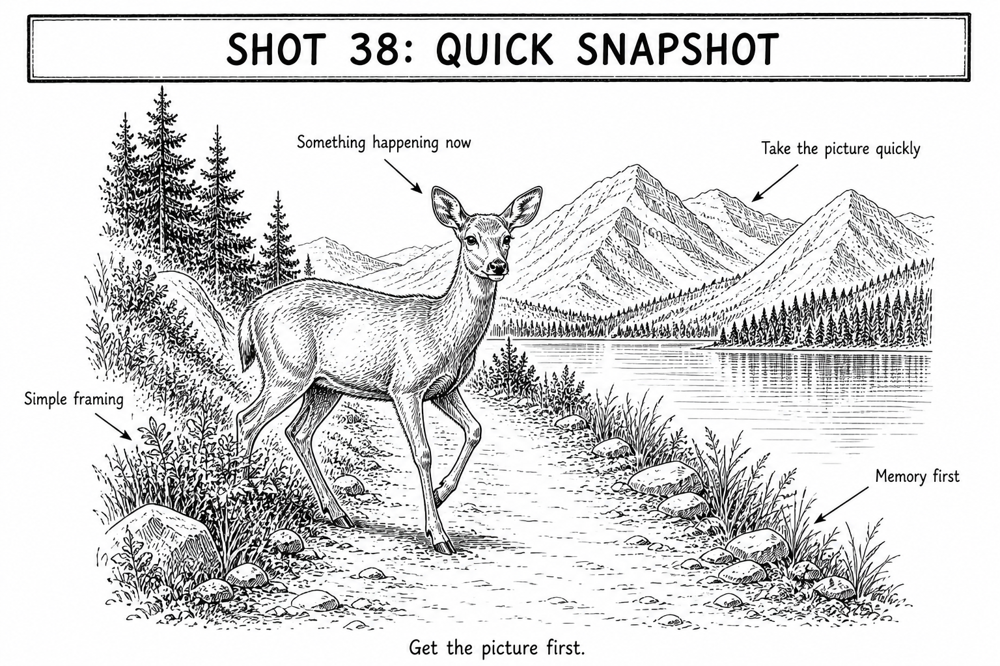

Start here
A+ | Mode A+ | ISO Auto
How to take it
- Choose the one thing you want to remember and put it near the center.
- Keep the camera level and remove only the biggest distraction from the edge.
- Put the AF point on the main subject.
- Half-press, wait for focus confirmation, and take two frames.
- Look once at the result; if it is sharp, put the camera away and enjoy the moment.
Focus this shot
Place it: Put the AF point on the main subject.
Look for: The main subject should look crisp when focus confirms.
If this happens
| Photo is blurry | Brace the camera and take another frame. |
|---|---|
| Camera will not focus | Aim at a crisp edge on the main subject. |
| Frame is messy | Shift one step or simplify the edge of the frame. |
| No time left | Use A+ and take the memory picture now. |
Tips
- A quick sharp photo is always better than no photo.
- Take two frames in case someone blinks or the camera moves.